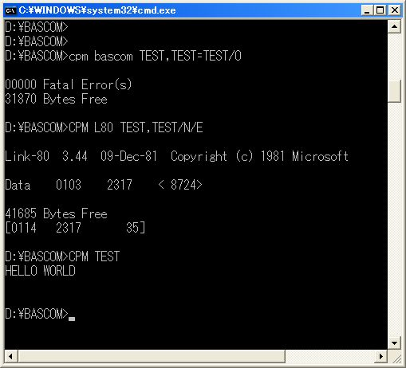

|
BASCOM |
マイクロソフト社のBASICコンパイラです。
00010 PRINT "HELLO WORLD" 00020 END |
左が最も簡単なBASICのプログラムです。
CPMエミュレータを使って下のように コンパイル -> リンク -> 実行 を行います。
|
 |
このツールの入手は http://www.retroarchive.org/ の下の所からできます。
|
自作環境で使う場合 |
BASICコンパイラで作ったプログラムをCP/Mの外で使う 場合に問題になるのは システムコール をどうするかと言うことがあります。 INPUT文 や PRINT文 はシステムコールがあります。 システムコールを無視する場合でも5番地にRETのコードの C9 を置いて呼び出しからの戻しとします。
CP/M80ではCOMファイルが実行プログラムですがインテル
へクスファイルを得る場合はリンク時に下のコマンドを
実行します。
CPM L80 TEST,TEST/N/E/X
|
メモリの読み書き |
00010 A%=PEEK(&H1234) 00020 POKE &H1236,A% 00030 END |
メモリの番地を指定しての直接の読み書きは左のよう
になります。
A%
は16ビットの変数です、1234hから読み出して1236hに
書き込んでいます。
BASCOM 5.30a- Copyright 1979,80,81
(C) by MICROSOFT - 31948 Bytes Free
0014 0007 00010 A%=PEEK(&H1234)
** 0014'I00000: CALL $530
** 0017'L00010:
** 0017' LDA 1234
** 001A' MOV L,A
** 001B' MVI H,00
** 001D' SHLD A%
0020 0009 00020 POKE &H1236,A%
** 0020'L00020: LHLD A%
** 0023' MOV A,L
** 0024' STA 1236
0027 0009 00030 END
** 0027'L00030: CALL $END
002A 0009
** 002A' CALL $END
002F 0013
00000 Fatal Error(s)
31831 Bytes Free
|
左のコンパイルリストを見ると
0014'
はプログラム開始の呼び出し
0027'
はプログラム終了の呼び出しで他に呼び出しを行って
いません。
必要なコードは
0017'
から
0024'
までのコードと分かります。
このプログラムは4955バイトなのですが必要なコード
は16バイトです。
このように呼び出しのないコードを書いた場合は最小
限の大きさに切り取ることができます。
|
ポートの読み書き |
00010 A%=INP(&H12) 00020 OUT &H13,A% 00030 END |
ポートの番地を指定しての直接の読み書きは左のよう
になります。
A%
は16ビットの変数です、12hから読み出して13hに
書き込んでいます。
BASCOM 5.30a- Copyright 1979,80,81
(C) by MICROSOFT - 31948 Bytes Free
0014 0007 00010 A%=INP(&H12)
** 0014'I00000: CALL $530
** 0017'L00010:
** 0017' IN 12
** 0019' MOV L,A
** 001A' MVI H,00
** 001C' SHLD A%
001F 0009 00020 OUT &H13,A%
** 001F'L00020: LHLD A%
** 0022' MOV A,L
** 0023' OUT 13
0025 0009 00030 END
** 0025'L00030: CALL $END
0028 0009
** 0028' CALL $END
002D 0013
00000 Fatal Error(s)
31806 Bytes Free
|
|
16ビットの加算 |
00010 A%=INP(&H12) 00020 B%=INP(&H13) 00030 C%=A%+B% 00040 OUT &H14,C% 00050 END |
BASCOM 5.30a- Copyright 1979,80,81
(C) by MICROSOFT - 31948 Bytes Free
0014 0007 00010 A%=INP(&H12)
** 0014'I00000: CALL $530
** 0017'L00010:
** 0017' IN 12
** 0019' MOV L,A
** 001A' MVI H,00
** 001C' SHLD A%
001F 0009 00020 B%=INP(&H13)
** 001F'L00020: IN 13
** 0021' MOV L,A
** 0022' MVI H,00
** 0024' SHLD B%
0027 000B 00030 C%=A%+B%
** 0027'L00030: LHLD A%
** 002A' XCHG
** 002B' LHLD B%
** 002E' DAD D
** 002F' SHLD C%
0032 000D 00040 OUT &H14,C%
** 0032'L00040: LHLD C%
** 0035' MOV A,L
** 0036' OUT 14
0038 000D 00050 END
** 0038'L00050: CALL $END
003B 000D
** 003B' CALL $END
0040 0017
00000 Fatal Error(s)
31759 Bytes Free
|
コンパイルリストを見ると16ビットの加算は DAD D (8080) で行われています。 これはZ80では ADD HL,DE です。
|
文法 |
本稿で解説しているBASICは古い形式のものなので基本 的な情報を掲載します。 BASICコンパイラの正規の解説書は持っていないのでマ イクロソフト系のBASICの文法書から抜粋します。
|
文字セット |
|
定数 |
|
文字定数 BASICで使える文字セットを並べ、全体を引用符 ( " ) で囲って指定します。 [例] "HELLO WORLD" |
|
数値定数 数値定数には、次の五つの形式があります。 |
|
整数形式
プラス(+)またはマイナス(-)の符号に続いて一つ以上
の数字を並べたもので、プラス符号は省略することも
できます。
|
|
固定小数点形式 符号に続いて、整数部、小数点、小数部の順に書いた もので、プラス符号は省略することができます。 整数部と小数部のうち、一方は省略できますが、両方 とも省略することはできません、小数部は ( . ) で表します。
|
|
16進形式 プレフィックス&Hに続いて、16進数(0～9,A～F)を並べ て書いたものです。 先行する0を除いて4桁まで書くことができ、&H0から&HFFFF までの範囲を表すことができます。 この形式で入力された16進数は、符号無し10進数に変 換されて出力されます。
|
|
8進形式 プレフィックス&Oまたは&に続いて8進数(0～7)を並べ て書いたものです。 先行する0を除いて6桁まで書くことができ、&O0～&O177777 までの範囲を表すことができます、この形式で入力さ れた8進数は、符号無し10進数に変換されて出力されま す。
|
|
単精度と倍精度の数値定数
数値定数には、単精度定数と倍精度定数があります。
単精度定数は、7桁までの精度で格納され、6桁までの
桁数で表示されます。
倍精度数値定数は、次のいずれかに当てはまるものです。
|
|
変数 変数は、BASICのプログラムの中で使われる値を表すた めに使われる名前です。 変数はプログラムの中で値が与えられるまでは、その 値は0になっています。 |
|
変数名と型宣言文字
変数名は、255文字以内の英数字で構成されますが、最
初の文字は英字でなければなりません、BASICは最初の
16文字+型宣言文字により変数名を区別します。
型宣言もなく型宣言文字も伴わない変数名は、単精度 形式の数値を表すものとして扱われます。
|
|
配列変数 配列は、同じ性質を持つ複数個のデータの集まりです。 配列は同一名でその要素を参照することができ、それ ぞれの要素は添字により順序付けられます。 ある変数を配列変数として宣言するためには、 DIM 文を用いて次のように行います。 DIM 変数名 (添字の最大値[,添字の最大値]・・・・・・・) カッコの中に書かれた添字の最大値の個数により、そ の配列変数の次元数を指定します。 配列の次元は、1次元から多次元の指定が行えます。 添字の最大値は整数形式で、0から32767の範囲でなけ ればなりません。 配列変数の一要素の参照は、各次元の添字を指定した 添字付き名で行い、その形式は次のとおりです。 変数名 (第1次元の添字[,第2次元の添字]・・・・・・・) 変数名の直後にカッコでくくって各次元の添字を指定 します。 この中に書かれた添字の個数は、配列変数の次元数と 一致しなければなりません。 添字は数値式で、その値は0から添字の最大値までです 。 各次元の添字の結果が整数でない場合は、小数部を切 り捨てた整数に変換されます。
|
|
式 式は演算の方法を示すもので、定数や変数、関数を演 算子で結んで指定します。 式には算術式、関係式、論理式および文字式があり、 この中で算術式、関係式および論理式を数値式と呼び ます。 |
|
算術式 算術式は、変数、定数、関数などの数値データを算術 演算子で結んだものです。 また算術演算子のない数値データのみの場合も算術式 と呼びます。 算術演算子には次のものがあります。
整数の除算 ( ￥ ) および 、整数の剰余( MOD ) の演 算において、オペランドが整数形式でないときは、小 数部を四捨五入し、整数に変換してから演算が行われ ます。
|
|
プログラミング
ファイル操作以外のCP/M環境を実装したZ80CPUを搭載したボードコンピュータで
のプログラミングについて述べます。
|